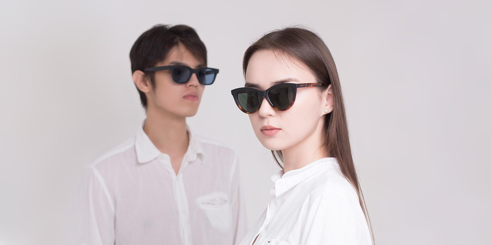

ӨМІРГЕ ЖАҢА КӨЗҚАРАС
Өзіңізге
жарасатын
көзқарас.
Айқын көру. Еркін таңдау. Өзіңізді сезіндіретін көзілдірік — DOS-та.
ҚАЗАҚСТАНДА, СІЗГЕ ЖАҚЫН7 қала · бір DOS

THE DOS PERSPECTIVE01 / 03
Жақсы көру.
Өзіңіздей болу.
Өзіңіздей болу.
Көруді тегін тексеру✳Күнделікті стильге арналған✳Қазақстанның 7 қаласында✳Таңдауға көмектесеміз
СІЗДІҢ СТИЛІҢІЗ. СІЗДІҢ ТАҢДАУЫҢЫЗ.
Әр күнге. Әр қырыңызға.
Алғашқы жұптан жаңа образға дейін.
Өзіңізге жақынын табыңыз.
Көрнекі топтама. Модельдер мен бағаларды салоннан нақтылаңыз.
ӨЗІҢІЗГЕ ҚАМҚОР БОЛЫҢЫЗ
Бәрі айқын
көруден басталады.
DOS маманы көруіңізді тексеріп, қажеттілігіңізге сай көзілдірік таңдауға көмектеседі.
01
Ыңғайлы қаланы таңдаңыз
Қысқа өтінім қалдырыңыз.
02
Уақытты келісіңіз
Оператор салон мен уақытты нақтылайды.
03
Көзіңізге көңіл бөліңіз
Тексеру шамамен 15 минутқа созылады.